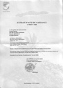

Genealogie_Complete

Graphique personnel
Autres noms
| Autres noms | Nom |
|---|---|
| Surnom | Bonne Maman |
| Nom marital | ÉRIN |
Parents
| Père | Date de naissance | Mère | Date de naissance |
|---|---|---|---|
 Robert Papa Roro JEAN-ÉLIE Robert Papa Roro JEAN-ÉLIE |
24 avr. 1886 |  Vigile PHILEMONT-MONTOUT (JEAN-ÉLIE) Vigile PHILEMONT-MONTOUT (JEAN-ÉLIE) |
24 juil. 1886 |
Conjoints
| Conjoint | Date de naissance | Enfants |
|---|---|---|
| Sans nom |
Léo JEAN-ÉLIERaphaelle JEAN-ÉLIESonia JEAN-ÉLIE |
|
| Sabas Fernand, Jesner ÉRIN |
29 déc. 1906 | Gisèle Marie ÉRIN (FERBAC) |
Événements personnels
| Type d’événement | Date | Lieu | Description |
|---|---|---|---|
 Naissance Naissance |
10 juil. 1908 | Le Lorrain, Martinique, Martinique, FRANCE | à 11h |
| Mariage |
19 avr. 1928 | Basse-Pointe, Martinique, Martinique, FRANCE | |
| Divorce |
06 févr. 1945 | Fort de France, Martinique, FRANCE | |
| Profession |
Employée au Lycée Carnot à Pointe-à-Pitre | ||
| Profession |
Employée au Lycée Carnot à Pointe-à-Pitre | ||
| Profession |
Employée au Lycée Carnot à Pointe-à-Pitre | ||
| Profession |
Sans profession | ||
| Profession |
Sans profession | ||
| Profession |
Sans profession | ||
| Décès |
01 avr. 2006 | Les Abymes, Guadeloupe, Guadeloupe, FRANCE |